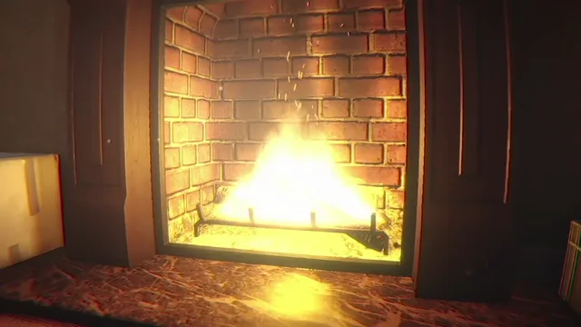
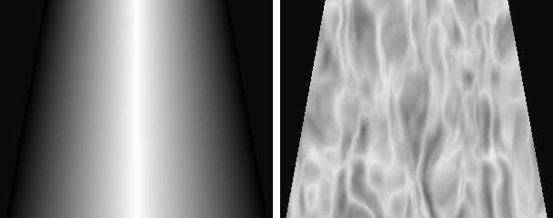
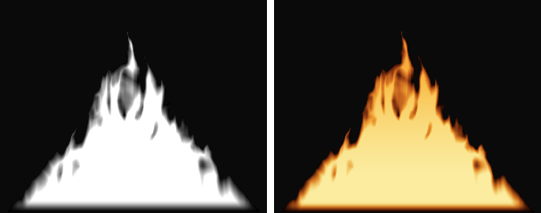
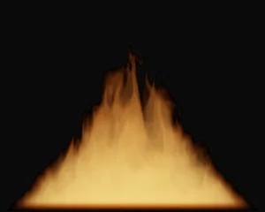

The goal
You see the living room fireplace up close in a dark, quiet moment, so flat particle sprites would've looked fake. We wanted flames with actual volume that look right from any angle and sit properly behind the logs.
How it works
The flames are a shader that ray-marches through a box sitting over the logs. For every pixel it takes 22 steps through the box, and at each step it works out two things: how thick the fire is there, and how hot.
1. Shape
It starts with the footprint, an oval over the logs that narrows towards the top. On its own that's just a glowing cone. To break it up, we sample a 3D noise texture stretched tall and scrolling upwards, warped a bit so it swirls, and turned into ridges so you get separate strands.

The trick that makes tongues is a cut-off that rises with height. Near the bottom almost any noise keeps the fire alight, but higher up it takes more and more, so only the strongest strands make it to the top.
float cut = h / _HeightFade;
float d = saturate((noise * foot * 1.7 - cut) * _Sharpness);2. Colour from temperature
Each point also gets a temperature, hottest at the roots and cooling as it rises. That picks a colour from a three-stop ramp: white-yellow, orange, then dark red at the tips. No textures are involved in the colour at all.

3. Marching through the box
Stacking all 22 steps along each ray gives the final volume. The flames are mostly see-through, so each step only blocks a little of what's behind it, and the colours add up. The noise keeps scrolling upwards, so the whole thing licks and flickers.

4. Sitting in the scene
The shader only adds light, and bloom takes care of the glow. It also checks the scene's depth, so the logs and grate sit in front of the flames without any extra setup. It's driven by the same script as our steam and smoke, which can fade it in and out.
The images on this page were rendered with a Python port of the shader, using the game's own 3D noise texture.